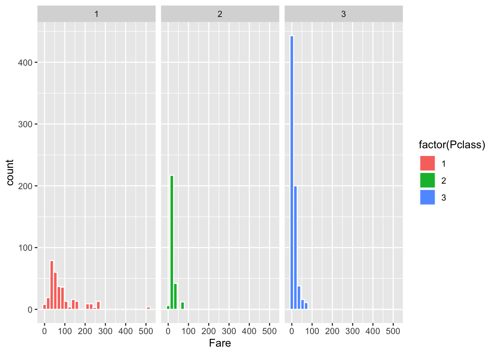
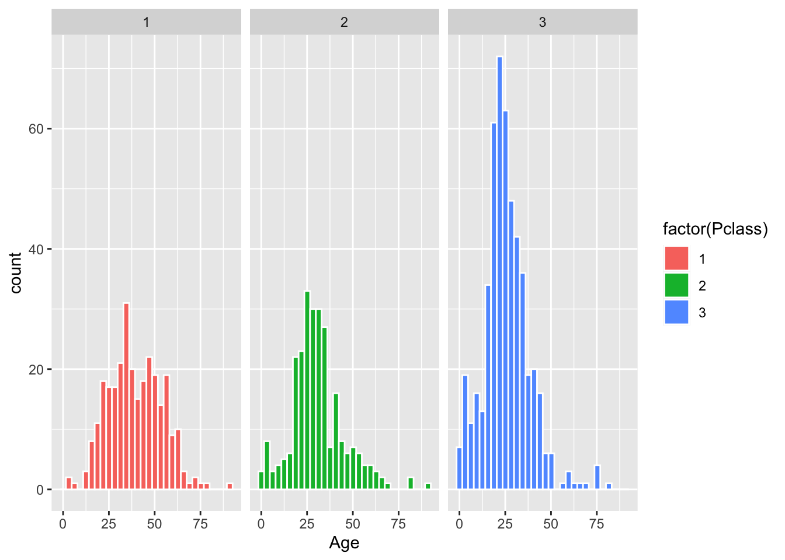

Ejercicio de Practica TF


Ejercicio de regresión lineal
Ejercicio de regresión no lineal
Ejercicio de regresión múltiples
Ejercicio de regresión logística
Datos del Titanic: Estos son datos reales
- Survived, if the passenger survived or not
- Pclass, the type of cabin, first, second and third class
- Name: the name of the passenger
- Sex of the passenger
- Age of the passenger
- Fare, how much they paid for the trip
- Embarked port, where they embarked on the ship, Southhampton, England, Queenstown, Ireland and Cherbourg in France.
##
## ── Column specification ────────────────────────────────────────────────────────
## cols(
## PassengerId = col_double(),
## Survived = col_double(),
## Pclass = col_double(),
## Name = col_character(),
## Sex = col_character(),
## Age = col_double(),
## SibSp = col_double(),
## Parch = col_double(),
## Ticket = col_character(),
## Fare = col_double(),
## Cabin = col_character(),
## Embarked = col_character()
## )## # A tibble: 6 x 12
## PassengerId Survived Pclass Name Sex Age SibSp Parch Ticket Fare Cabin
## <dbl> <dbl> <dbl> <chr> <chr> <dbl> <dbl> <dbl> <chr> <dbl> <chr>
## 1 1 0 3 Brau… male 22 1 0 A/5 2… 7.25 <NA>
## 2 2 1 1 Cumi… fema… 38 1 0 PC 17… 71.3 C85
## 3 3 1 3 Heik… fema… 26 0 0 STON/… 7.92 <NA>
## 4 4 1 1 Futr… fema… 35 1 0 113803 53.1 C123
## 5 5 0 3 Alle… male 35 0 0 373450 8.05 <NA>
## 6 6 0 3 Mora… male NA 0 0 330877 8.46 <NA>
## # … with 1 more variable: Embarked <chr>Hacer grafico de la variable de respuesta. ¿Cual de la lista es la variable de respuesta y porque?
Seleccionar por lo menos tres variables explicativas de la lista, dos de estas tienen que ser el “Pclass” y “Age”, la otra uds la selecciona de la lista.
Hacer gráficos de la frecuencia de las variables explicativas
ggplot(Titanic, aes(Fare, fill= factor(Pclass)))+
geom_histogram(color="white")+
facet_grid(~factor(Pclass))## `stat_bin()` using `bins = 30`. Pick better value with `binwidth`.## Warning: Removed 1 rows containing non-finite values (stat_bin).
ggplot(Titanic, aes(Age, fill= factor(Pclass)))+
geom_histogram(color="white")+
facet_grid(~factor(Pclass))## `stat_bin()` using `bins = 30`. Pick better value with `binwidth`.## Warning: Removed 263 rows containing non-finite values (stat_bin).
- Usando la prueba correcta evalúa los tres diferentes modelos o sea la relación entre la supervivencia y explicar lo que esta probando y su interpretación de:
- Edad
- Categoría de Camarote
- Edad y Categoría de Camarote
- Evalúa múltiples modelos para determinar si explica mejor los resultados
Ejercicio de regresión Poisson
Ejercicio de regresión de Beta